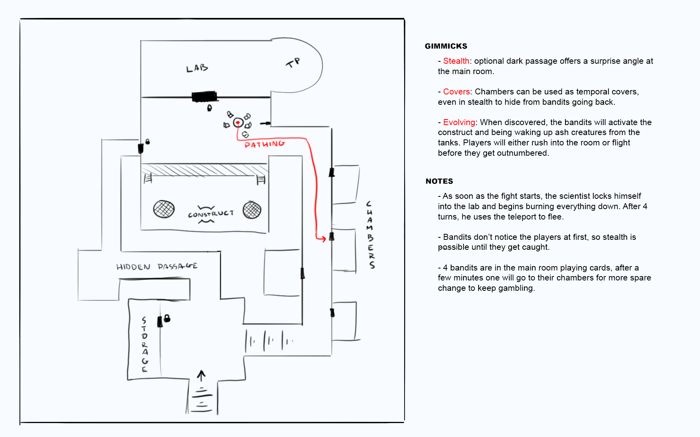

The Sewers
Context
After entering an abandoned factory following a man the players suspected of being with the bandit group, they ended up in a part of the sewers, now in use by the bandits as a hideout and a laboratory for a mad scientist they call "The Illuminated Man".
Creatures
In these corridors we find humans armed with light crossbows and cimitars, people who very recently started training and fighting. But they have an ace up their sleeve: a mechanical construct created by the "Illuminated Man" as a defense mechanism for his laboratory. This construct is much stronger than the bandits and is the main threat for the players, as it's located right at the end of the base, right next to the door of the laboratory.
Gimmicks
For this map, I went with the elevation, cover and evolving gimmicks:
- Elevation: In all the base we can find varying heights, with stairs or ladders that create little fortified zones where the players and enemies can find tactical advantage.
- Covers: In these tunnels, smaller chambers were reformed into beedroms and chambers where the bandits stay. With unlocked doors, the players can use them as temporal covers if the bandits shoot them from the main room.
- Evolving: When the players reach the main room, the construct comes alive and bandits take advantage of this by trying to summon more ashen creatures from the tanks. So, each round, the players risk to get outnumbered, but the construct is too tough to be ignored. Also, before getting spotted, players might want to take a more stealthier approach, and they can, but the bandits won't stay still: eventually some of them will go to their chambers, the players noticing it but having little time to react, like a Real-time tactics game (RTT).
Sketch
This was the first sketch of the hideout. I focused into a 2 route dungeon, one clearly more stealthy than the other, and a tough fighting chamber where the bandits have the advantage, but if the players retreat the chambers can be used as cover. However, reterating for too long will create new enemies from the tanks in the main room, so they can't stall their enemies forever. Rushing into the room awakens the construct, so both options have their risks.
Final Map